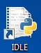
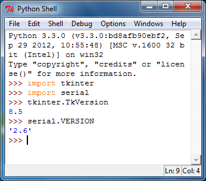
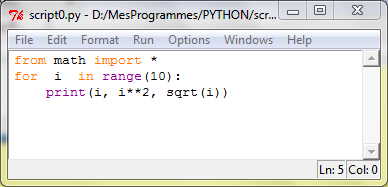

- On trouve sur le net plusieurs variantes de Python.
- Voici le lien du site officiel http://www.python.org/
- Ce document est basé sur la version 3.3.0. J'ai jeté un coup d’œil
dernièrement (juin 2019) la version courante était 3.7.3
Il n' y a pas de configuration particulière. Il est tout de même préférable
de ne pas mélanger vos scriptes (programmes) avec ceux du logiciel Python. Pour cela,
- Créez un dossier qui sera votre dossier de travail. (par exemple
D:\PYTHON),
- Placer l'icône de l'interface graphique IDLE de python sur le bureau,
- Configurer le raccourci pour lui préciser votre dossier de travail:
Clic-droit dessus -> propriétés -> onglet raccourci -> Démarrer dans -> préciser le
chemin de votre dossier de travail,
- Démarrer le programme à partir de ce raccourci. On obtient la
fenêtre ci-dessous, c'est la fenêtre Python shell ou la fenêtre de commandes. Python est un
interpréteur, le signe >>> signifie que nous avons la main. Si on tape des instructions dans
cette fenêtre, elles sont interprétées immédiatement. Par exemple, pour vérifier la version de tkinter,
tapez les deux lignes:
>>> import tkinter
>>> tkinter.TkVersion

- Ecrire
un premier scripte:
- Ouvrir l'éditeur de texte intégré: file --> New Window,
- Ecrire le programme de votre choix. Par exemple

- Sauvegarder avec l'extension .py ou .pyw file
-> save ou Ctrl+S
(par défaut, pyton utilise .py)
- Taper la touche F5 pour exécuter. Les résultats s'affiche dans la
fenêtre de commande. Nous verrons plus tard comment créer une interface graphique,
- Ce programme peut être exécuté à partir de l'explorateur Windows
(double clic). Les programmes .py ouvre une fenêtre de commande inutile ce qui n'est pas le
cas des programme .pyw
Comment Installer un module
additionnel
Il existe des centaines de librairies qui peuvent se greffer sur python.
Vous en avez un aperçu dans les sites ci-dessous, sinon Google est votre meilleur ami
http://www.catswhocode.com/blog/python-50-modules-for-all-needs
http://www.lfd.uci.edu/~gohlke/pythonlibs/
Pour installer un nouveau module, on peut procéder de plusieurs façon, en
voici trois:
- Essayer de trouver le module sous forme d'un installeur (.exe), dans ce
cas, il suffit de double cliquer dessus pour l'installer. On ne trouve pas toujours un installeur (.exe). Il
arrive qu'on on en trouve un, mais il ne correspond pas à la dernière version du module.
Un bon endroit pour chercher est le suivant http://www.lfd.uci.edu/~gohlke/pythonlibs/.
-
Utiliser la méthode (normale) en utilisant un package le plus souvent sous forme d'archive .tar.gz. Un bon
endroit pour chercher la dernière version est le suivant https://pypi.python.org/pypi
La procédure d'installation est la suivante:
- Extraire le contenu de l'archive dans un dossier (de préférence dans la racine d'un disque).
Normalement, on doit y trouver un fichier setup.py,
-
Démarrer la fenêtre de commande Windows (Démarrer --> Exécuter --> cmd) ou (touche
Windows+R --> cmd)
- Se placer dans le dossier de l'archive à l'aide de la commande cd
-
Taper la commande py setup.py install.
S'il y a une erreur du type "Accès refusé", il faut démarrer cmd.exe en mode administrateur
-
Utiliser un outil d'installation pip
qui permet de télécharger et d'installer de nouveaux modules.
Normalement, pip fait partie de python, si ce n'est pas le cas, il faut le télécharger et l'installer.
- Démarrer la fenêtre de commande Windows cmd.exe
- Taper pip install nom_module
(c'est pip qui se charge du téléchargement et de l'installation)
- S'il y a une erreur du type "Accès refusé", il faut démarrer
cmd.exe en mode administrateur
-
Pour désinstaller un module à l'aide de pip
- Vérifier sous quel nom le module a été installé: Taper pip
freeze dans la fenêtre de commande.
- Taper la commande pip uninstall nom_module
Installer le module pyserial
Pour prendre en charge le port série, il faut installer une librairie pour le
faire. J'ai choisi le module pyserial.
Le plus simple est d'utiliser la méthode C pour l'installer: taper pip install pyserial
dans la fenêtre de commande Windows
Pour vérifier que le module a bien été installé, taper dans le fenêtre de commande Python:
>>> import serial
>>> serial.VERSION